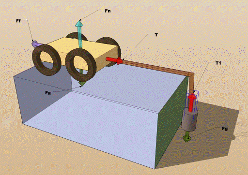

|
This is a problem put forward by a teacher in Texas, Richard Taylor at the Hockaday School. The problem is fairly straightforward and like many other problems in this tutorial it might be solved more easily by hand or using other means. I present it here to illustrate the use of the very powerful built-in function "Solve" to help work the solution to this problem. Problem:The "Lone Ranger" is sneaking up on Bad Bart who is holed up on at the bottom of a cliff. The 82.0kg masked rider ties a rope to a 325.kg wagon at the top of the cliff and lowers himself over the [frictionless] edge to Bad Bart below. Unfortunately the locked wheels of the cart start to slip over the ground and our hero accelerates toward the cliff bottom below. If the coefficient of friction (µk) the cart makes with the ground is 0.21. Path To Solution:Given the diagram at the right we can set up the equations by systematically setting up all the variables in the classic Newton formulation. I have deliberately avoided shortcuts so you can see the full process in solving this system of equations. I have deliberately sped up the video so you can watch all the steps in about 2 minutes. At any time you can pause and step through each phase of the process to see what was entered. |

|
|||
|
||||
|
Enter the equations one at a time into the calculator. Remember that the calculator does not distinguish between upper and lower case. We will be able to make use of the calculator's ability to pull down any entered line into the command line later. Follow the steps in the movie at the right. You can pause, rewind or single step through the frames to duplicate the steps. I have not skipped any steps deliberately but in a more practical application I would probably forgo all the substitutions. Enter the cowboy equation first since it is complete by itself. Next, enter the equation(s) for the cart. I entered it literally and substituted the expression for the friction and normal force in succession. |
Once you are done, simply enter the solve function and enter the two equations. Note that I have the solve function already entered in my customized menu with the varaibles already set up and ready to solve. First I get the symbolic result and then I can simply take the result (using the ans(1) function) and make the substitutions I entered in the beginning to get the numerical results. Neat!